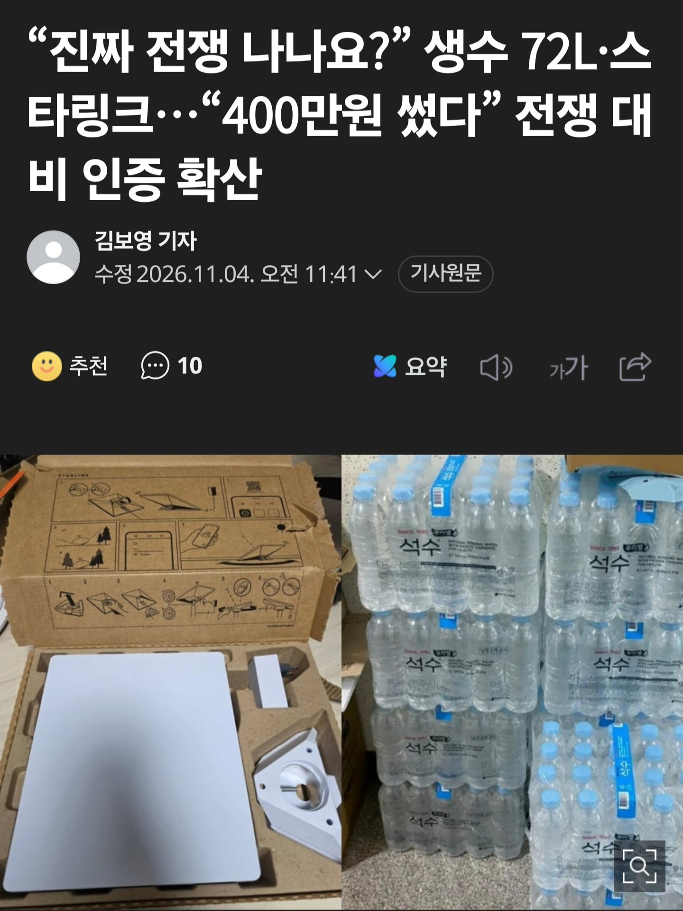
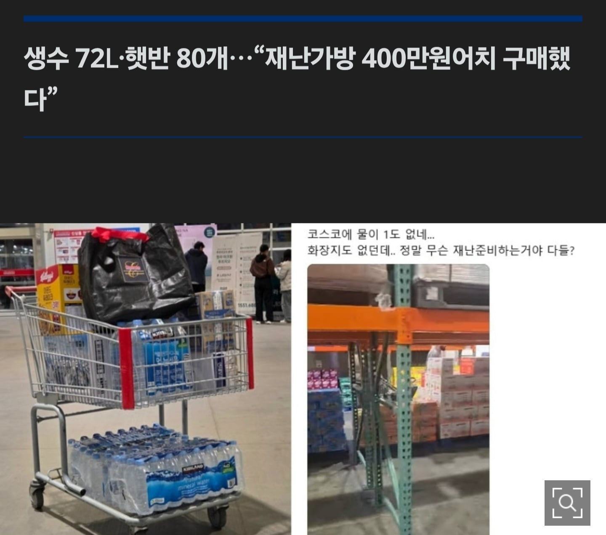
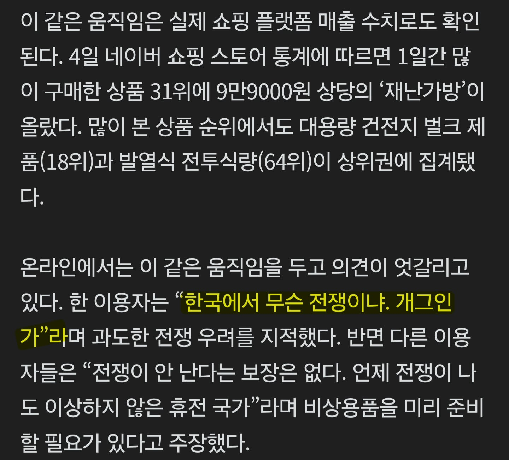
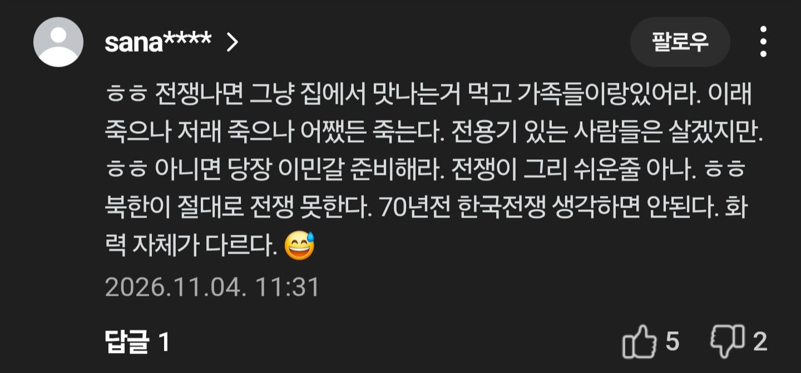
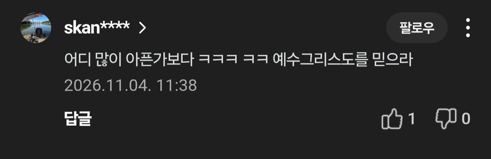
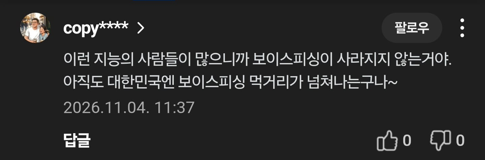
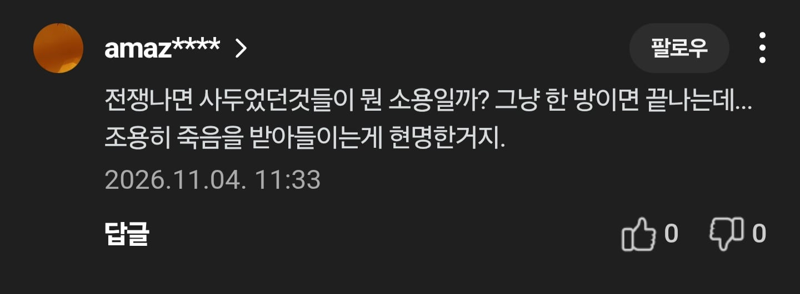

https://n.news.naver.com/mnews/article/016/0002718685







https://n.news.naver.com/mnews/article/016/0002718685







대비하는게 문제는 아니지
프랑스에서 냉장,냉동고 해킹으로 식재료 폐기 된 게 여기까지 스노우볼이 구르네 ㅋㅋㅋ
오히려 다른 국가에서 정부가 대비하라 권고하는데 우린 가만히 있는게 반대로 안전불감증같기도 하고
프랑스에서 식재료마트 700여곳 냉장고,냉동고가 해킹당해서 냉장 냉동 식재료가 대량으로 폐기됨 그걸 전자전 테러로 본거고
근데 유럽에서 자주 쓰이는 모델의 냉장고와 냉동고라서 주변 국가들도 혹시 모를 상황에 대비해서
1주일치 먹을건 구비해두라고 한건데
그 앞에 왜 구비하라는지 이유는 빠지고 뒤에 구비하라고 하는것만 sns로 돌면서 지금 상황 터진거임 ㅋㅋ
아하 ㅋㅋㅋㅋ
아하 ㅋㅋ
그럼 일본은 머 있음?
거긴 태풍
먼 태풍이 또 오나보네
거긴 지진태풍 자연재해
예전에 전쟁인가 난다고 음식 수백만원어치 사다 쟁여놓고 커뮤에 인증했던 사람 생각나네
븅 ㅋㅋㅋㅋ
강도가 많이 쎈 코로나 격리때처럼 되겠지. 경제는 돌려야하니 출근은 하라 할거고 생필품 독과점 치러 다닐거고 물차랑 음식물 지원 트럭들 다닐테고
국지전이면 그럴텐데 전면전 될 가능성이 더 큰듯?
오히려 국지전이면 안저러겠지.. 싸우는 방면만 커버하면 되니까. 우러전 보니 출근 다 하더라
집에 쌀 때문에 먹을거 걱정할 일은 없을거 같은데
전기수도 끊기면 생쌀 씹어먹을순 없잖아
전기 수도 끊기면 햇반이든 라면이든 마찬가지 아니냐
황금고블린
설마 저거때문에 햇반 가격 올랐나? 개당 900원쯤 했는데 지금 천원 넘어가더라
우리 회사 갑자기 라디오 ㅈㄴ팔렸는데..이거 때문인가보네
화력전하면 수도권은 3일안에 초토화임
쿨찐들인거지ㅋㅋㅋ
과도한 호들갑은 문제지만
준비가 필요한건 맞음
차이카와 호들갑급이네ㅋㅋ
호들갑 오지구요
테마주 바로 취금이니?
전쟁나기전에 당장 불꽃축제때 사람 몰리면 카톡,전화,5G 안 터지는 거 땜에
스타링크 혹하긴 해
음식 며칠분 쟁여놓는건 좋은거같은데 비상물품모을때 남들한테 알리지않는게 젤 중요함 ㅋㅋ
쓰레드 유튜브 이런데서 하루종일 전쟁난다 이러고 있으니.. 사람들이 멍청해진건지 속이는 놈이 나쁜건지..
스레드 하면 멍청해지는 바이러스가 옮나봄
선동똥글싸는애들은 그냥 조회수 빨아서 돈벌생각 뿐인데 ㅋㅋ
때려 죽여도 오늘 안내려옵니데이!
이 미친 전쟁광놈들은 맨날 총력전생각만 하누
음식이아니라 활과 화살같은걸 챙겨야지 ㅉㅉ 활과 화살이 있으면 음식이 알아서 복사가되는데
예..예?
식인부터 시작하는 아포칼립스 생활;
돈 많구나? ㅋㅋㅋ
재미로하는거지 스타링크 제외하면 어차피 구매하면 일상에서 소비되는거임 이런 기회에 한번씩 자각하는것도 괜찮고
경제 살리고 싶으시다잖아
멸공이형 싱글벙글
멍청비용
솔직히 충청북도 위에 살면 저런거 물자 준비 하는거 의미 없음
ㄹㅇ ㅋㅋ 어차피 국지전이면 준비 할 이유가 없고
전면전이면 준비해봤자 집에서 버티면 안되니까 다 버리고 가야 함 ㅋㅋ
전쟁설을 진심으로 믿는거야?
전쟁나면 뭐 군수공장 전환되어서 군수품 만들어야제
현연 예비군 다뒤지면 그때 징집당하면되고
후방타격와서 뒈지면 팔자려니 해야지
전쟁이 난다면 상식적으로 전면전을 일으킬텐데 걔내가 미쳤다고 최전방에 지뢰를 존나 많이 매설을 하겠음...?
아군들 밟고 다 뒤지라고?
맨날 미사일 발사하고 어그로 끄는건 걍 체제 유지 하고싶어서 어그로 끄는거임
전쟁 대비 물자는 슈퍼커브